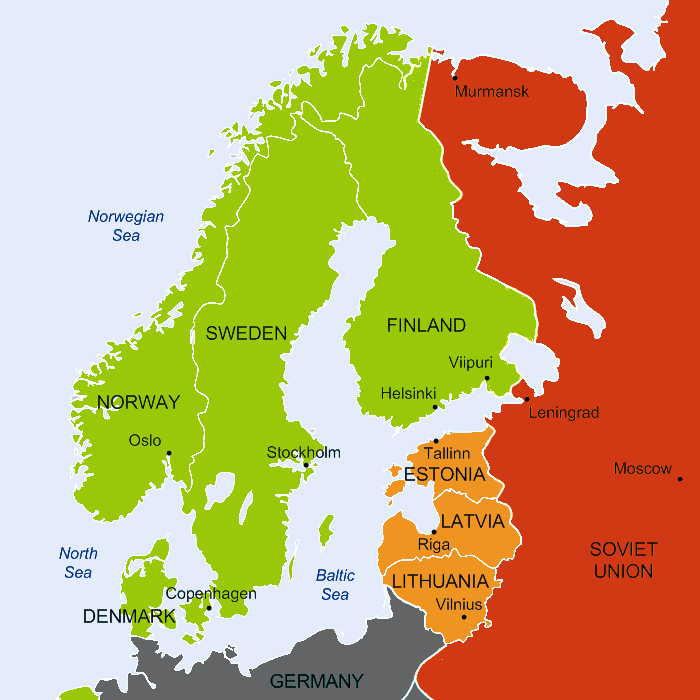

Le déchiffrement des messages chiffrés allemands par la Suède
Lorsque la Seconde Guerre Mondiale éclate, le 1er septembre 1939, la Suède a deux dangereux voisins. L'Allemagne a déjà annexé l'Autriche et l'Union Soviétique réclame des territoires à la Finlande et aux États baltes. Une semaine avant l'attaque de l'Allemagne sur la Pologne, les deux géants ont signé, à la surprise générale, un pacte de non-agression, qui rend d'autant plus dangeureux leurs prétentions territoriales.
Pour des raisons historiques (la Suède a été plus ou moins en guerre permanente contre la Russie de 1220 à 1809), c'est la menace soviétique qui est perçue comme la plus dangeureuse dans l'immédiat. D'ailleurs, après l'échec des négociations engagées par les Soviétiques avec les Finlandais visant à créer une zone tampon pour protéger la ville de Leningrad, très proche de la frontière, l'Union Soviétique envahit la Finlande le 30 novembre 1939. Commence alors la Guerre d'Hiver, où les Finlandais résistent héroïquement à un pays 47 fois plus peuplé. Cette guerre s'achève le 13 mars 1940 par la signature d'un traité de paix qui prive la Finlande d'un tiers de son territoire.
Un mois plus tard, l'occupation surprise de la Norvège et du Danemark par l'Allemagne le 9 avril 1940 crée une nouvelle menace pour la Suède, coincée entre deux géants dont l'affrontement direct semble inéluctable. La liberté politique de la Suède est sérieusement remise en cause. Pour éviter un risque d'invasion, le gouvernement suédois est contraint à louer des lignes de télécommunication entre la Norvège et l'Allemagne et à accepter des transports de troupes et de marchandises sur ses lignes de chemin de fer.
Après la capitulation française et l'occupation des pays baltes à l'été 1940, la Finlande devient plus un enjeu majeur. Va-t-elle à nouveau se faire envahir par l'URSS? Va-t-elle servir de base arrière à une attaque allemande contre les soviétiques? Plus que jamais, il est vital pour la Suède de connaitre les intentions de l'Allemagne et de la Russie. Ironiquement, c'est une des concessions faites à l'Allemagne qui va permettre aux Suédois de connaitre avec précision les projets allemands...
En effet, les Suédois sont certes obligés de louer des lignes télégraphiques aux Allemands, mais cela leur laisse la possibilité d'espionner les conversations diplomatiques entre Oslo et Berlin, ainsi qu'entre Berlin et l'ambassade allemande en Suède. Pendant le mois d'avril, les conversations ne sont pas chiffrées mais les opérateurs allemands parlent d'un Geheimfernschreiber, ou G-Schreiber, c'est-à-dire d'un téléscripteur secret, qui sera utilisé prochainement. Et effectivement, dès le début du mois de mai, les messages allemands deviennent illisibles.
Les Allemands ont en effet mis en service la machine Siemens T52, ou G-Schreiber. Celle-ci est une machine électromécanique qui est la combinaison d'un téléscripteur (machine à envoyer des télex) et d'une machine chiffrante. Elle est composée de dix roues crantées. Lorsque l'opérateur tape une lettre, celle est chiffrée par un mécanisme complexe utilisant la position des dix roues. Puis ces roues tournent pour que la lettre suivante soit chiffrée d'une autre façon. À l'autre extrémité de la ligne, une autre machine G-Schreiber est chargée de déchiffrer les messages parvenus, sans aucune intervention de l'opérateur. La T52 est une machine à chiffrer redoutable. Par exemple, avant que les roues ne reviennent dans leur position initiale, il faut rentrer plus de 800 000 000 000 000 000 caractères! D'ailleurs, les Allemands l'utilisaient pour chiffrer leurs communications entre centres de commandement alors qu'ils réservaient leur célèbre Enigma aux communications tactiques.
Les services suédois se penchent immédiatement sur le décryptage des messages chiffrés par la G-Schreiber. À la tête de ces opérations de décryptage on trouve Arne Beurling, un jeune et brillant mathématicien, qui avait déjà fait ses preuves dans les affaires de cryptographie. En juin 1940, il réalise un véritable exploit : sans avoir aucune information préalable sur le fonctionnement de la G-Schreiber, armé seulement d'un papier et d'un crayon, et se basant sur des messages envoyés le 25 mai et le 27 mai, il parvient à casser le code. Il aide alors un ingénieur, Vigo Lindstein, à créer une machine permettant de décrypter automatiquement les messages chiffrées par la G-Schreiber. De juin 1940 à mai 1943, les Suédois sauront lire l'essentiel des messages chiffrés par la G-Schreiber, leur donnant une connaissance inégalée des projets allemands et leur permettant d'ajuster leur politique. En particulier, ils sont au courant des détails de l'opération Barbarossa (nom de code donné à l'invasion de l'URSS par l'Allemagne). Ils communiquent ces informations aux Britanniques, qui eux-mêmes les transmettent aux Soviétiques. Ces derniers, ne sachant la source de l'information, n'y croient guère...
Vers mai 1943, les Allemands, ayant compris qu'ils sont espionnés, mettent progressivement en service une nouvelle version de la machine T52, plus sécurisée, et les possibilités de décryptage sont perdues. Cependant, l'Allemagne ayant subi ses premières défaites, la menace est moins forte et la nécessité du décryptage moins importante.
Personne ne sait exactement comment A. Beurling est venu à bout du code. Dans une conférence en 1976, il déclara : "Un magicien ne révèle jamais ses tours". Comme souvent, cependant, ce qui a permis ce décryptage n'est pas la faiblesse de la machine, mais les erreurs de protocole dans son utilisation. Ainsi, les télécommunications étaient souvent entâchées d'erreurs, ce qui conduisit les opérateurs allemands à envoyer plusieurs fois le même message. De même, un dispositif voulant au départ faciliter le travail des opérateurs les incitait, par paresse, à utiliser plusieurs fois la même clé pour envoyer des messages différents, ce qui permettait une analyse "en profondeur".
L'histoire du déchiffrement des messages secrets allemands par la Suède a ses héros, Arne Beurling en tête, et aussi ses traitres. Les traitres sont deux frères, Allan et Knut Nyblad. Allan Nyblad travaillait pour le service du chiffre suédois. Une de ses missions était de transporter les résultats des déchiffrements depuis le lieu où ils étaient secrètement obtenus jusqu'au quartier général de la défense. Il se trouve que les deux frères étaient communistes et qu'ils avaient été recrutés comme espions par l'Union Soviétique. Sur le chemin du quartier général, Allan Nyblad s'arrêtait dans un appartement qu'il avait loué, prenait des photographies des messages déchiffrés, puis continuait son chemin. C'est son frère qui était chargé de porter les résultats à l'ambassade soviétique.
Ce petit manège dura approximativement d'aout 1941 au début de l'année 1942. Il cessa lorsqu'une jeune fille à laquelle Allan Nyblad avait pratiqué un avortement illégal décéda. Il fut alors envoyé en prison, et c'est Åke Persson qui lui succéda au service du chiffre. Knut, sous la pression des russes, contacta Åke afin de reprendre l'opération. Celui-ci feignit l'intérêt, mais en référa à son chef. Un piège fut alors tendu à Knut Nyblad, à qui Persson confia des documents secrets mais peu importants. Nyblad fut arrêté alors qu'il les conduisait à l'ambassade soviétique. Les deux frères furent ainsi découverts et condamnés à 12 ans de prison.
La plupart des informations de cette pages sont extraites du livre Codebreakers, Arne Beurling and the swedisch crypto program during WW2 par Beng Beckman.